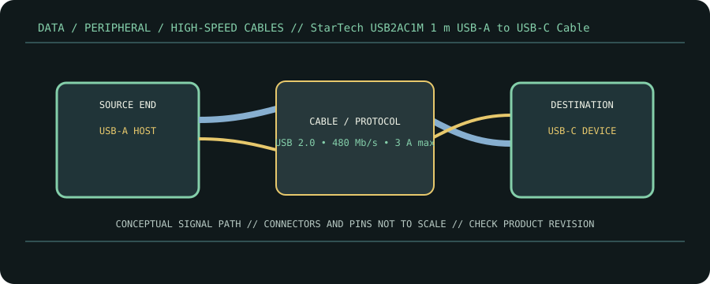

[ CABLE PRODUCT RECORD // STARTECH.COM USB2AC1M USB 2.0 CHARGING/SYNC CABLE ]
StarTech USB2AC1M 1 m USB-A to USB-C Cable
USB 2.0 Type-A male ↔ USB Type-C male. This entry documents the named product model, not a universal guarantee for all cables with the same connector.

CLASSIFICATION: Data, peripheral, and high-speed cables. Model-specific facts below are sourced; negotiated operation remains limited by the connected devices.
Interface and capability
| Product / protocol | StarTech.com USB2AC1M USB 2.0 charging/sync cable. USB 2.0 High-Speed data; USB Power Delivery is not claimed for this USB-A source cable. |
|---|---|
| Connector type | USB-A male to reversible USB-C male; model is specified as a 1 m charge-and-sync cable. |
| Electrical / length limits | 1 m; up to 480 Mb/s USB 2.0 data. StarTech lists up to 3 A charging; voltage and current are constrained by the source, sink and applicable USB charging behavior. |
| Revision-specific compatibility | Connect a USB-C device to a legacy USB-A host or suitable charger for USB 2.0 data/charging. It is not a USB 3.x, USB4, Thunderbolt, or DisplayPort cable. |
Compatibility & handling
- The USB-C endpoint does not make this a USB-C-to-C PD cable; the USB-A end and product rating define a different power path.
- Use a source and device that support the selected charging current. The 3 A product rating is a ceiling, not an output guarantee.
- For video or high-speed storage, select a cable explicitly specified for the required protocol and lane rate.
Sources & further reading
- StarTech — USB2AC1M 1 m USB-A to USB-C cableProduct-specific connector, length, 480 Mb/s and 3 A information.
- StarTech.com — USB 2.0 cable products and connector familiesManufacturer cable-family reference for connector and generation selection.
- USB-IF — USB 2.0 SpecificationUSB 2.0 signaling and electrical/protocol reference.
- USB-IF — USB Type-C Cable and Connector SpecificationType-C receptacle/cable design and marking reference.